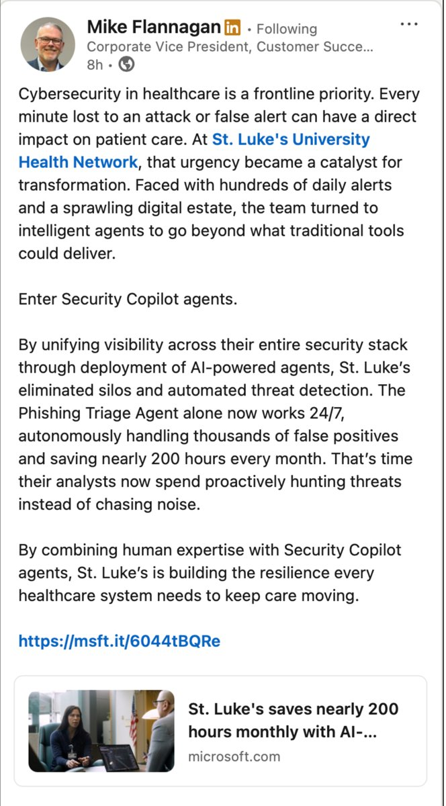
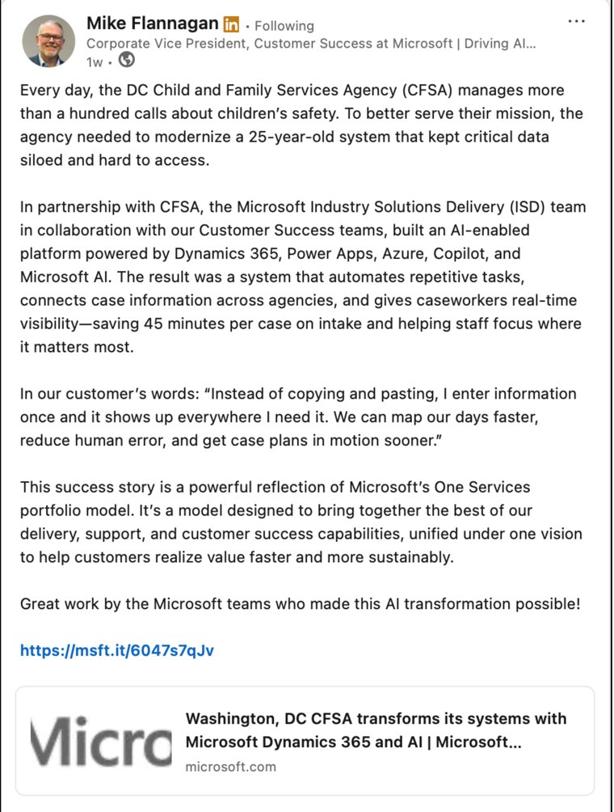
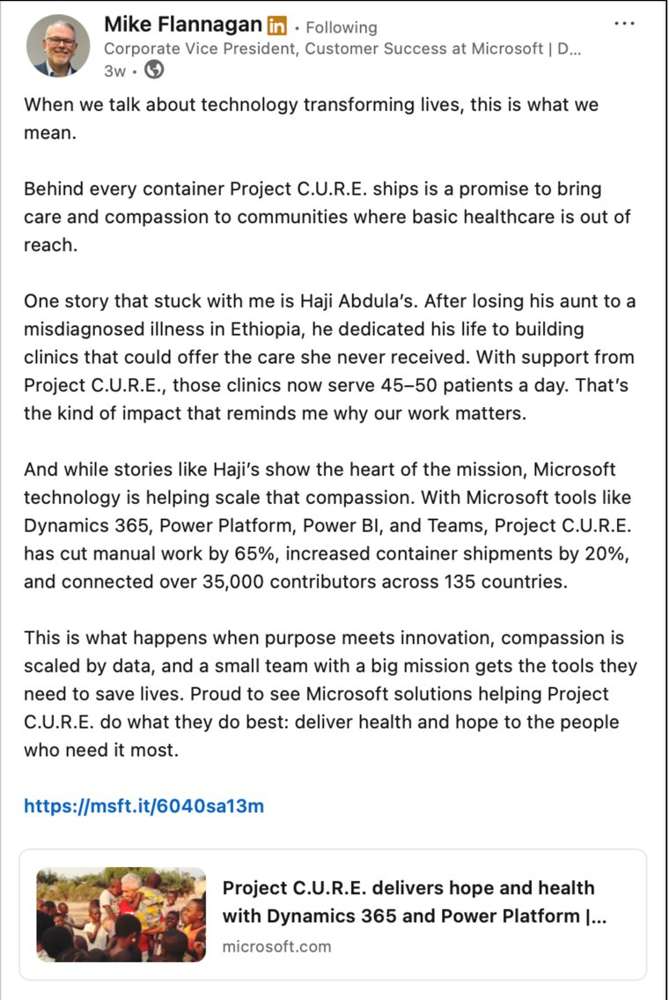

Executive communications and organizational change
Executive and employee communications for a 4,500+ person global organization
- The challenge
- Help leaders communicate priorities, organizational change and emerging AI capabilities clearly and consistently across a global Customer Success organization of more than 4,500 employees.
- My role
- Developed executive messaging and a recurring leadership communications program, translating organizational priorities, change initiatives and AI adoption into clear employee-facing communications.
- Strategic approach
- Partnered with senior leaders to clarify strategic intent, establish consistent executive messaging and coordinate communications across video, email, presentations and internal digital channels.
Explore the project: Executive communications and organizational change
Executive partnership
Worked directly with senior leaders, including the Corporate Vice President of Customer Success, to clarify strategic intent during organizational transformation. Developed the CVP’s monthly leadership video, from scripting and editorial development through planning and distribution, and authored and ghostwrote executive emails, scripts, presentations and posts. Advised leaders on framing sensitive messages so they stayed clear and responsive to employee concerns.
Change and AI adoption
Translated AI capabilities and leadership priorities into practical communications across newsletters, presentations, video, email and digital channels, connecting what leaders were prioritizing to what employees needed to know and do.
Editorial governance and measurement
Established communications KPIs, operating plans and editorial processes that improved planning, performance visibility and consistency across internal channels.
Executive thought leadership and customer storytelling
Served as lead editor of customer success narratives for Microsoft’s Corporate Vice President of Customer Success, refining executive LinkedIn posts and stories about Microsoft Cloud and AI adoption to communicate customer outcomes, solution value and business impact.

See two more posts


Supporting capability: AI workflows
Created AI agents and workflow automations for drafting, editing and summarization that made editorial work faster and more consistent while preserving executive voice and tone.